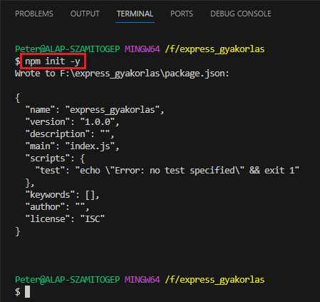
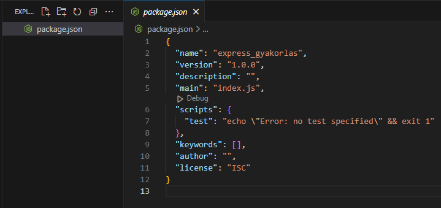
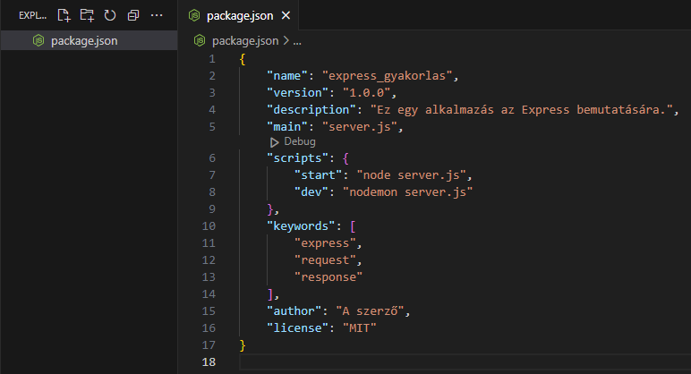
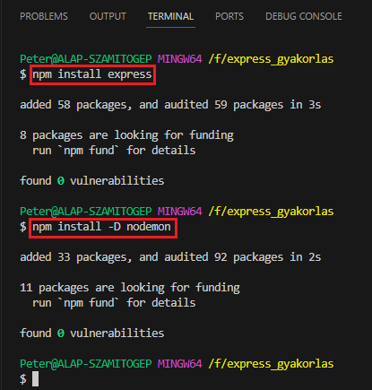
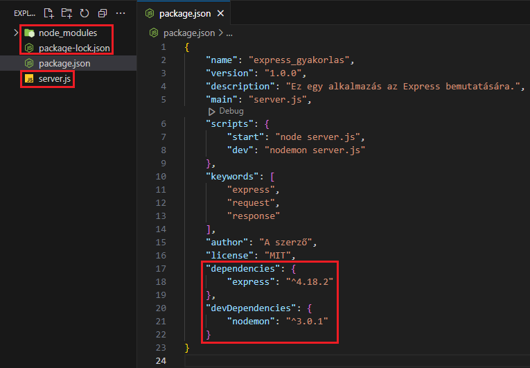

A témakör célja, hogy megismerkedjünk az Express-szel.
Az Express egy Node.js (telepítsük a gépünkre, ha még nincs rajta) keretrendszer.
A hivatalos internetes felülete: Express.
Legfőbb feladatának a webes alkalmazások backend oldali támogatását tekinthetjük:
Először is hozzunk létre egy mappát, amelyben az alkalmazásunkhoz szükséges dolgokat tárolni fogjuk.
Nyissunk meg egy parancssori felületet ebben a mappában. Ez lehet a Windows Powershell vagy a Command Prompt. De használhatjuk a Visual Studio Code beépített terminálját is. Mi is ezt fogjuk tenni.
Adjuk ki a következő utasítást:

Ennek hatására létre jön egy package.json nevű állomány. Írjunk át benne néhány dolgot.


Ezután telepítsük a minimálisan szükséges csomagokat. A -D a fejlesztői (development) csomagot jelenti, azaz csak a fejlesztés fázisában használjuk:


A nodemon egy a szerver automatikus frissítéséhez szükséges csomag, ha valamit megváltoztattunk a szerverben.
Megjelent a package-lock.json állomány, amely a különböző függőségek (dependencies) közötti kapcsolatokat tárolja el. HA NEM TUDOD MIT CSINÁLSZ NE NYÚLJ HOZZÁ!
A másik új dolog a node_modules mappa. Ide tölti be a Node.js a szükséges dolgokat. HA NEM TUDOD MIT CSINÁLSZ NE NYÚLJ HOZZÁ!
Végül hozzunk létre egy server.js állományt a munka megkezdéséhez!